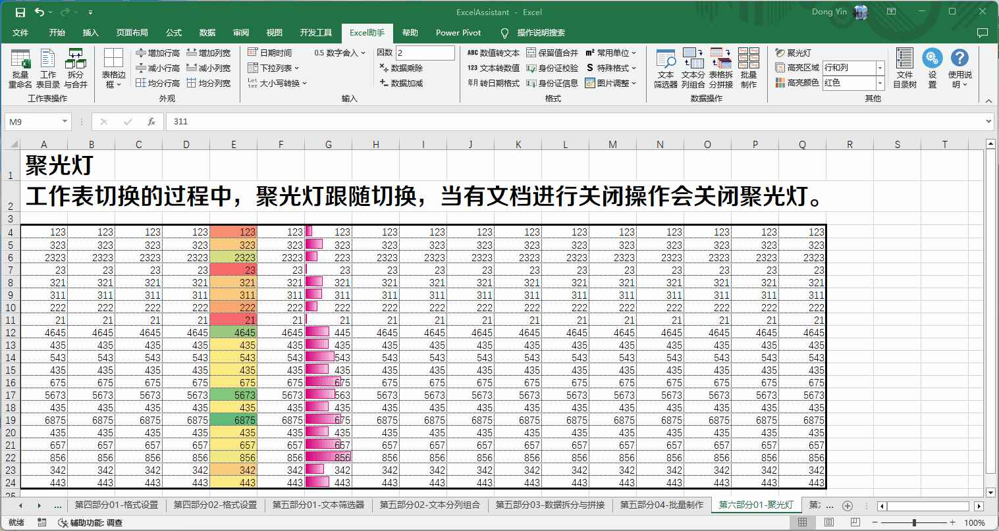

Excel助手Ribbon菜单中的其他功能包括聚光灯功能、工具箱、本插件的设置以及帮助说明。
方便在大量数据的情况下，高亮显示选中区域，或行、列的阅读模式。其下为高亮区域的模式选择以及高亮颜色选择，包括行、列、行和列以及单元格4中模式。在聚光灯开启的状态下，可以实时调整高亮区域和高亮颜色。
聚光灯模式示例：
注意：聚光灯功能会在同时开启的工作簿，工作表之间自动切换，但当任何工作表点击关闭时（即使点击关闭后又取消关闭流程），聚光灯都将关闭，需再次开启。
工具箱的具体功能及使用说明见工具箱章节
为避免误操作引起程序长时间执行无意义的计算，导致Excel卡死，或者耗费较大系统资源，因此程序对部分操作适用的单元格或者行列数目进行了适当限制。 在需要的情况下，可以进行相应的调整，以满足使用需求。
行高列宽调整设置为针对表格外观区域中调整行高列宽功能。需要注意的是行高的单位为磅，列宽的单位为单位字符宽度。设置范围为1~10。同时调整的行列数目设置范围为100~1048576，同时调整的行数越多，程序执行时间越长。
格式设置最大单元格数，针对数据辅助输入区域和数据格式区域的功能进行限制。设置范围为1000~2147483648。该计数为合并计数，即多个区域选择的情况下，以所有选择区域的总数计算。
数据分列组合最大行数，设置范围为100~1048576。
图片与单元格边框间隙指使用数据格式区域中图片调整功能时，控制图片与单元格边框的间距。
身份证验证中验证地区码选项，控制身份证验证时是否执行地区码验证。
右键菜单显示返回目录选项用于控制，当文档插入了工作表目录后，程序是否在右键菜单中显示返回目录选项。